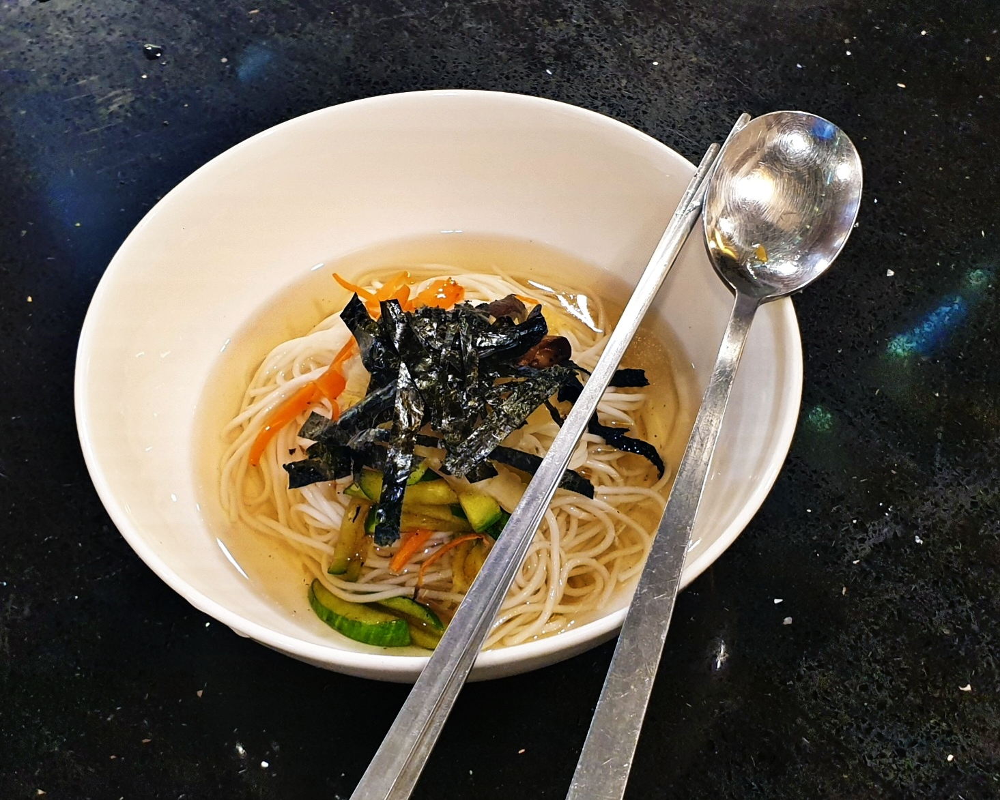

Korean Temple Cuisine: Banquet Noodle Soup

I made this dish at a Korean temple cooking class in Seoul and thought that the flavors were so robust and lovely for a vegetarian diet. This recipe was given to me by Korea Temple Food and I hope you enjoy it.
Ingredients
For soup
- Thin Wheat Flour Noodle: enough for four servings
- Napa Cabbage Kimchi: 100g
- Shiitake Mushrooms: two
- Zucchini: 1
- Carrot: 1/4th
- Roasted Seaweed Laver: two sheets
- Perilla Oil
- Homemade Soy Sauce
- Vegetable Broth: 8 cups
For dipping sauce
- Homemade Soy Sauce: 2 tbsp
- Cheongyang Chili Peppers: 2
- Green Peppers: 2
- Ground Perilla Seed: 1 tbsp
How to Make the Soup
- Make the seasoning sauce first. Yess water out of the kimchi leaves and chop them into small strips.
- Afterwards roast the seaweed paper briefly and cut into thin strips using a scissors.
- Cut the shiitake mushrooms into thin strips. Season it with soy sauce and sesame oil and stir fry it.
- Slice the zucchini into thin strips and sprinkle with salt. Add some oil to a frying pan and stir fry until lightly cooked.
- Cut the carrot into small strips and pan fry it lightly, you can add a little bit of water to help it steam.
- Pour water into a pot with the noodles and let them boil.
- When the water boils add a half cup of cold water after about a minute. After it boils again, wait a minute and add another 1/2 cup of cold water.
- Strain the noodles and add cold water to them after the noodles come to a final boil.
- Heat vegetable broth add seasoning sauce to taste.
- Portion out noodles into bowls, arrange toppings on noodles and pour on the broth. Add the seaweed to the top and serve with seasoning sauce.